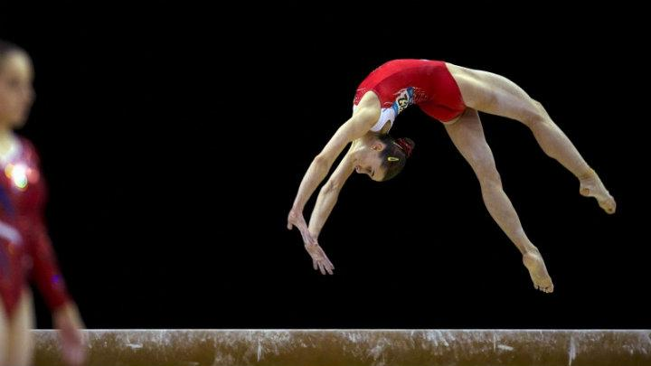
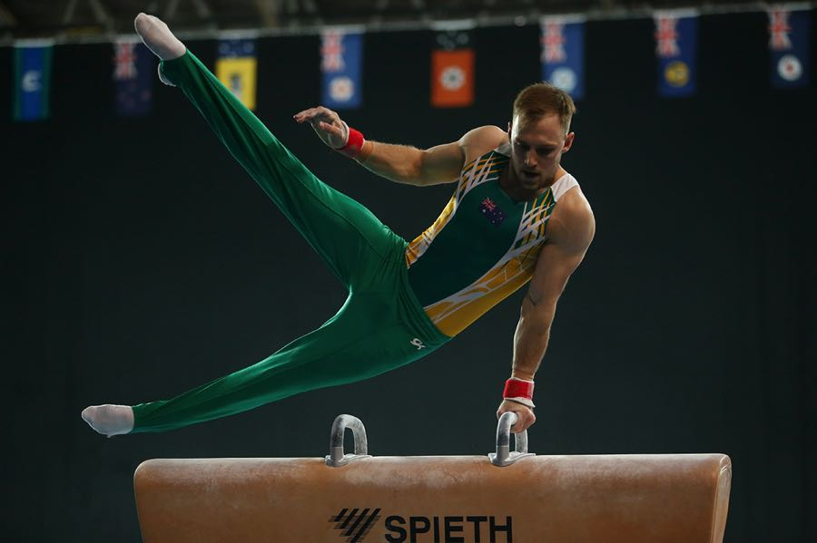

La gimnasia artística es una modalidad de gimnasia que consiste en la realización de una composición coreografica, combinando de forma simultánea y a una alta velocidad, movimientos corporales.
Las características de este deporte exigen del gimnasta unas condiciones físicas excepcionales.
La gimnasia moderna tiene su origen pedagógico en 1811, cuando Friedrich Ludwig Jahn, profesor del Instituto Alemán de Berlín, creó un primer espacio para la práctica de gimnasia artística al aire libre. Gran parte de los actuales aparatos derivan de sus diseños.
La gimnasia artística es una modalidad de gimnasia que consiste en la realización de una composición coreográfica, combinando de forma simultánea y a una alta velocidad, movimientos corporales.
Barra fija.
Barras paralelas.
Anillas.
Suelo.
Salto de potro.
Caballo con arcos
https://leonelleodolfocampuzanodiestra.000webhostapp.com/
http://juegossport.byethost16.com/